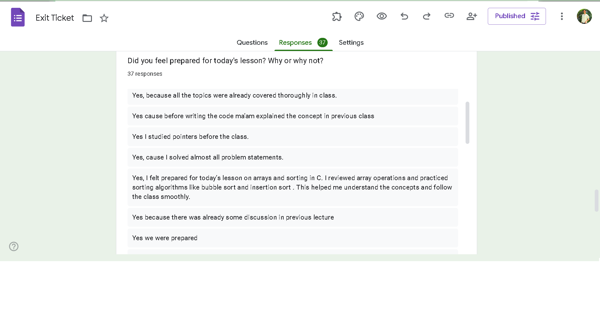

📊 Exit Ticket Summary
Insights from student exit ticket responses:


An AI-Enhanced Digital Resource Hub for Educators
Made by Mandeep Kaur
Click below to view the flashcard set:
Click below to take the quiz:
Insights from student exit ticket responses:
Listen to the lesson podcast below:
Explore AI-generated images related to Computers and Programming in C:
These images were created using Leonardo.ai and represent an old computer, loops, and conditional statements in C. Visual storytelling helps enhance understanding of technical concepts.


I used ResearchRabbit to explore the topic “AI- and ML-based Smart Waste Management.†Starting with Gupta (2019), I discovered papers like Vicentini (2009) and Arebey (2011) that discuss optimization and sensors for waste systems. This tool showed how different papers connect and helped me explore research in an easy, visual way.
AI has transformed my way of teaching by making everything easier and more creative. I can now create lessons, quizzes, and images much faster than before. Tools like ChatGPT help me prepare questions and summaries in minutes. AI also makes learning more fun for students with interactive flashcards, visuals, and even podcasts. It saves me time and gives me new ideas to teach in a better way. I feel more confident and excited to try new things in class. AI has truly changed the way I teach and connect with my students. It made my content creation faster, my quizzes more interactive, and helped me explore new forms of student engagement.
Ask me anything about loops, conditionals, or C programming basics: